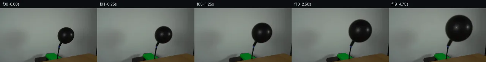

![首帧]()

Round 00
2026-11-04T22:50:49.064122+00:00像素候选变化代码 +147/−0inspection 更新
pixels 46f3bb56539e25f0 · code a30112a39dab2cfc
查看本轮 generate.py 真实 diff
--- previous/generate.py
+++ current/generate.py
@@ -0,0 +1,147 @@
+"""Local source-pixel warping for a fixed-camera balloon inflation clip."""
+from pathlib import Path
+import numpy as np
+from PIL import Image, ImageDraw
+from scipy.ndimage import binary_dilation, binary_erosion, map_coordinates
+from artifact_io import save
+
+ROOT = Path(__file__).resolve().parent
+SOURCE = np.asarray(Image.open(ROOT / 'first_frame.png').convert('RGB'), dtype=np.uint8)
+H, W = SOURCE.shape[:2]
+Y, X = np.mgrid[:H, :W].astype(np.float64)
+
+
+def wall_terms(x, y):
+ u, v = (x - 174.0) / 50.0, (y - 74.0) / 50.0
+ return np.stack([np.ones_like(u), u, v, u*u, u*v, v*v,
+ u*u*u, u*u*v, u*v*v, v*v*v], axis=-1)
+
+
+def extract_surface():
+ src = SOURCE.astype(np.float64)
+ gray = src.mean(axis=2)
+ region = (X >= 148) & (X <= 199) & (Y >= 47) & (Y <= 102)
+ dark = (gray < 61) & region
+ # Wall is sampled outside the foreground silhouette, with a guard against
+ # its blurred antialiasing edge and the fixed hose below the balloon neck.
+ fit_region = (X >= 134) & (X <= 216) & (Y >= 33) & (Y <= 113)
+ excluded = binary_dilation(dark, iterations=4) | ((Y > 97) & (X < 163))
+ use = fit_region & ~excluded
+ basis = wall_terms(X, Y)
+ coef = np.linalg.lstsq(basis[use], src[use], rcond=None)[0]
+ wall = np.clip(basis @ coef, 0, 255)
+ # Recover the soft silhouette against the locally fitted wall. Fully
+ # interior pixels keep their original RGB values without alteration.
+ support = binary_dilation(dark, iterations=1) & (Y <= 103)
+ alpha = np.clip((wall.mean(axis=2) - gray) /
+ np.maximum(wall.mean(axis=2) - 9.0, 1), 0, 1)
+ alpha *= support
+ alpha[binary_erosion(dark, iterations=1)] = 1.0
+ # The blue band and all hose below y=103 are fixed input pixels.
+ alpha[Y >= 103] = 0
+ foreground = np.clip((src - (1 - alpha[..., None]) * wall) /
+ np.maximum(alpha[..., None], 1e-6), 0, 255)
+ premultiplied = foreground * alpha[..., None]
+ # Repair only the original moving silhouette and its fractional boundary.
+ clean = src.copy()
+ removed = alpha > 0.001
+ clean[removed] = wall[removed]
+ return alpha, premultiplied, clean
+
+
+ALPHA, PREMULT, CLEAN = extract_surface()
+ANCHOR_X, ANCHOR_Y = 155.5, 102.5
+FINAL_SCALE = 1.635
+SUPERSAMPLE = 3
+
+
+def frame_at(t):
+ if t == 0:
+ return SOURCE.copy()
+ progress = t / 19.0
+ # A constant volume inflow gives cube-root growth in linear dimensions.
+ scale = (1 + (FINAL_SCALE**3 - 1) * progress)**(1/3)
+ bg = CLEAN.copy()
+ # A very diffuse, growing wall shadow consistent with the soft source light.
+ growth = (scale - 1) / (FINAL_SCALE - 1)
+ initial_shadow = np.exp(-0.5 * (((X-28)/31)**2 + ((Y-89)/30)**2))
+ current_shadow = np.exp(-0.5 * (((X-27)/(31+13*growth))**2 +
+ ((Y-(89-13*growth))/(30+10*growth))**2))
+ wall_gate = 1/(1 + np.exp(np.clip((X-123)/5, -60, 60)))
+ wall_gate *= 1/(1 + np.exp(np.clip((Y-122)/2, -60, 60)))
+ shade = np.clip(0.065*(current_shadow-initial_shadow), -0.01, 0.04)*wall_gate
+ bg *= 1-shade[..., None]
+ # Integrate subpixel coverage rather than moving a hard binary mask.
+ accumulated_alpha = np.zeros((H, W), dtype=np.float64)
+ accumulated_color = np.zeros((H, W, 3), dtype=np.float64)
+ for iy in range(SUPERSAMPLE):
+ for ix in range(SUPERSAMPLE):
+ dx = (ix+0.5)/SUPERSAMPLE - 0.5
+ dy = (iy+0.5)/SUPERSAMPLE - 0.5
+ sx = ANCHOR_X + (X + dx - ANCHOR_X)/scale
+ sy = ANCHOR_Y + (Y + dy - ANCHOR_Y)/scale
+ coords = np.array([sy, sx])
+ a = map_coordinates(ALPHA, coords, order=1, mode='constant', cval=0)
+ # Keep the physical hose connector exactly fixed below its top edge.
+ a[Y >= 103] = 0
+ accumulated_alpha += a
… diff truncated; 60 more lines …